Section 12 Example: Preprocessing workflow
In this example I walk through a preliminary exploration of one morphological variable in Komi-Zyrian dialects. I use general dplyr and purrr functions described in section Tools: R.
In principle there are four patterns that occur regularly: мунісныс, мунісны, муніны, муніныс. Only two first occur in this data, but the regex would in principle capture all of them.
The idea is to define a general function that with the simplest possible example data finds and classifies the wanted examples. This way we can differentiate the query and processing from the data we apply it into. So in principle we could take another Komi dialect sample and run similar analysis into that.
dummy_data <- tibble(token = c('мунісныс', 'мунісны', 'муніны', 'муніныс'))
filter_verbs <- function(data){
data %>% mutate(type = if_else(str_detect(token, 'сн..$') & str_detect(token, 'с$'),
true = 'isnɨs',
false = if_else(str_detect(token, 'сн.') & str_detect(token, 'ы$'),
true = 'isnɨ',
false = if_else(str_detect(token, '([^с]ныс$)'),
true = 'inɨs',
false = 'inɨ')))) %>%
mutate(type_final = as.factor(if_else(str_detect(type, 's$'),
true = 's-final',
false = 'vowel-final'))) %>%
mutate(type_medial = as.factor(if_else(str_detect(type, 'sn'),
true = 's-medial',
false = 'vowel-medial')))
}
dummy_data %>% filter_verbs() %>% knitr::kable()| token | type | type_final | type_medial |
|---|---|---|---|
| мунісныс | isnɨs | s-final | s-medial |
| мунісны | isnɨ | vowel-final | s-medial |
| муніны | inɨ | vowel-final | vowel-medial |
| муніныс | inɨs | s-final | vowel-medial |
It seems that the result is correct, so we can start to apply it to the real data. However, if we find problems along the way, we can always return to this point and modify the function, as long as we haven’t started to do manual edits in the derived files.
In the next step we load the corpus directly into R from previously saved RDS file. How these can be worked with was described in section Tools: R.
kpv <- read_rds('corpus.rds')Of course if the corpus is small enough we can also just read it directly from whatever source we have. However, as this process is repeated every time we compile this website, it is easier to read it this way.
verbs <- kpv %>%
filter(! participant %in% c('NTP-M-1986', 'MR-M-1974', 'RB-1974')) %>% # this simply removes the western researchers Niko Partanen, Michael Rießler and Rogier Blokland
filter(str_detect(token, '(и|і)(с)?ны(с)?$')) %>% # This selects the wanted tokens
filter_verbs() %>% # Here we call the function we set up above
select(token, type, everything())We can easily look into how many types we have and which are the most common tokens. This doesn’t modify the data frame, but gives us information about how sensical the result is. Usually this kind of more finished document doesn’t show the whole workflow how the preprocessing function was edited iteratively while examination of the results shows something is off, but in principle older versions should usually be present in older Git commits. This can be useful when it is realized later that some of the older version was indeed the correct one.
verbs %>% count(type) %>% slice(1:10) %>% knitr::kable()| type | n |
|---|---|
| inɨ | 300 |
| inɨs | 250 |
| isnɨ | 1803 |
| isnɨs | 1196 |
verbs %>% count(token) %>% arrange(desc(n)) %>% slice(1:10) %>% knitr::kable()| token | n |
|---|---|
| вӧліны | 176 |
| вӧліныс | 113 |
| кучисныс | 84 |
| воисныс | 67 |
| олісны | 67 |
| шуисны | 57 |
| локтісны | 46 |
| ветлісны | 45 |
| карисны | 44 |
| олісныс | 44 |
verbs %>% filter(type == 'inɨs') %>% slice(1:10) %>% knitr::kable()| token | type | utterance | reference | participant | time_start | time_end | session_name | filename | word | type_final | type_medial |
|---|---|---|---|---|---|---|---|---|---|---|---|
| муніныс | inɨs | Нужник бӧкас сулалэ и бӧр муніныс. | kpv_izva19300000ArtijevI-135-10 | IXA-M-18XX | 90000 | 100000 | kpv_izva19300000ArtijevI-135 | /Volumes/langdoc/langs/kpv/kpv_izva19300000ArtijevI-135/kpv_izva19300000ArtijevI-135.eaf | муніныс | s-final | vowel-medial |
| муніныс | inɨs | Муніныс ныа вӧлӧн. | kpv_izva19570000-290_3bz-11 | XXV-M-19XX | 52900 | 54220 | kpv_izva19570000-290_3bz-Bakur | /Volumes/langdoc/langs/kpv/kpv_izva19570000-290_3bz-Bakur/kpv_izva19570000-290_3bz-Bakur.eaf | Муніныс | s-final | vowel-medial |
| вӧліныс | inɨs | Баракъясас вӧліныс гразнӧйӧсь зэй. | kpv_izva19570000-290_3bz-23 | XXV-M-19XX | 111380 | 114420 | kpv_izva19570000-290_3bz-Bakur | /Volumes/langdoc/langs/kpv/kpv_izva19570000-290_3bz-Bakur/kpv_izva19570000-290_3bz-Bakur.eaf | вӧліныс | s-final | vowel-medial |
| лэччаніныс | inɨs | Рытнас шонді лэччаніныс ке сӧстэм - мӧдасылас лоэ шондіа лун , | kpv_izva19590000IgusevJA-280 | JAI-M-1939 | 1104086 | 1109573 | kpv_izva19590000IgusevJA | /Volumes/langdoc/langs/kpv/kpv_izva19590000IgusevJA/kpv_izva19590000IgusevJA.eaf | лэччаніныс | s-final | vowel-medial |
| лэччаніныс | inɨs | Шонді лэччаніныс ке гӧрд , мӧдасылас лоас тӧла лун . | kpv_izva19590000IgusevJA-288 | JAI-M-1939 | 1165648 | 1169283 | kpv_izva19590000IgusevJA | /Volumes/langdoc/langs/kpv/kpv_izva19590000IgusevJA/kpv_izva19590000IgusevJA.eaf | лэччаніныс | s-final | vowel-medial |
| уудиныс | inɨs | уудиныс (водьпомыс) ляпкыд. | kpv_izva19591216-05582_2az.29 | MXV-F-1937 | 147886 | 150661 | kpv_izva19591216-05582_2az | /Volumes/langdoc/langs/kpv/kpv_izva19591216-05582_2az/kpv_izva19591216-05582_2az.eaf | уудиныс | s-final | vowel-medial |
| лоиныс | inɨs | а сыри- сыритяяс ӧні нин лоиныс важынкаяс: | kpv_izva19591216-05582_4a.078 | MXV-F-1937 | 519866 | 526876 | kpv_izva19591216-05582_4a | /Volumes/langdoc/langs/kpv/kpv_izva19591216-05582_4a/kpv_izva19591216-05582_4a.eaf | лоиныс | s-final | vowel-medial |
| кӧйиныс | inɨs | кӧйиныс сёяс и кулэ. | kpv_izva19591216-05582_4a.101 | MXV-F-1937 | 717843 | 720943 | kpv_izva19591216-05582_4a | /Volumes/langdoc/langs/kpv/kpv_izva19591216-05582_4a/kpv_izva19591216-05582_4a.eaf | кӧйиныс | s-final | vowel-medial |
| кӧйиныс | inɨs | кӧйиныс верме кӧрлы джагедны и луна. | kpv_izva19591216-05582_4a.112 | MXV-F-1937 | 774030 | 779556 | kpv_izva19591216-05582_4a | /Volumes/langdoc/langs/kpv/kpv_izva19591216-05582_4a/kpv_izva19591216-05582_4a.eaf | кӧйиныс | s-final | vowel-medial |
| кӧйиныс | inɨs | кӧйиныс дебсе росся костэ; | kpv_izva19591216-05582_4a.113 | MXV-F-1937 | 779556 | 783611 | kpv_izva19591216-05582_4a | /Volumes/langdoc/langs/kpv/kpv_izva19591216-05582_4a/kpv_izva19591216-05582_4a.eaf | кӧйиныс | s-final | vowel-medial |
Often the actual benefit of having the data in a programmatic environment instead of just ELAN is that can use in the research variables from metadata that cannot be accessed in ELAN. In our participant naming system we use usually the convention where the gender and birthyear are marked to the name id.
verbs <- verbs %>% mutate(gender = str_extract(participant, '(?<=-)[MF](?=-)')) %>%
select(token, type, gender, participant, everything())
verbs %>%
count(gender)## # A tibble: 3 x 2
## gender n
## <chr> <int>
## 1 F 2455
## 2 M 1029
## 3 <NA> 65Here we see that for some speakers we didn’t find the gender specified as is described in the convention. The reason is that there are some old transcribed texts for which we don’t know who is the speaker – very likely the same text has been elicitated from several speakers and is some kind of a synthesis of those. We simply don’t know. This is somewhat typical for fieldwork data from the 19th and early 20th century, although variation in practices is also great. In this case we know (after looking a bit better which files are having this problem) what is the reason for this problem, and we can decide to leave out those cases if necessary. However, it is good to take into account that if there are missing values, it is very important to examine what is going on behind them.
verbs %>%
filter(is.na(gender)) %>%
count(type)## # A tibble: 4 x 2
## type n
## <chr> <int>
## 1 inɨ 7
## 2 inɨs 3
## 3 isnɨ 52
## 4 isnɨs 3In this point we can take a note that in the oldest data available there are very few examples of the s-final forms, but it is also a very small subset of the corpus.
Before advancing further, we can add one more variable to the dataframe we are working with.
verbs <- verbs %>%
mutate(year = str_extract(session_name, '\\d{4}(?=\\d{4})')) %>%
select(token, type, gender, year, everything())Year is of course a bit problematic variable as we aren’t really having that much data for each year. So let’s add a new column for the decade.
verbs <- verbs %>%
mutate(type = as.factor(type)) %>%
mutate(year = as.numeric(year)) %>%
mutate(decade = (year %/% 10) * 10) %>%
select(token, type, gender, year, decade, everything())After this the plotting will work nicely. We can analyze the distribution of tokens per decade:
ggplot(verbs,
aes(x = decade)) +
geom_bar()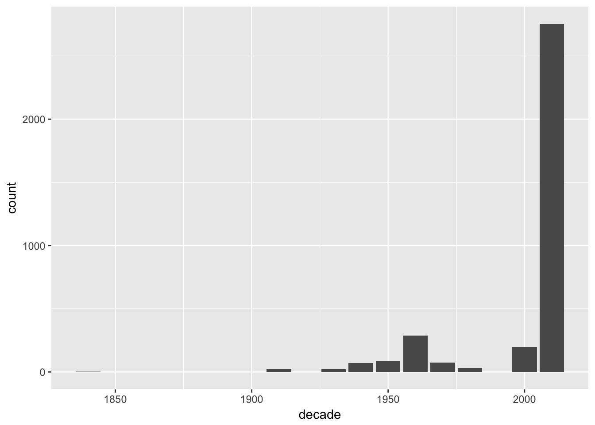
This reflects well the data distribution of IKDP corpus, which makes sense as these verb forms should occur everywhere.
ggplot(verbs) +
geom_bar(mapping = aes(x = decade, fill = type_medial), position = "fill")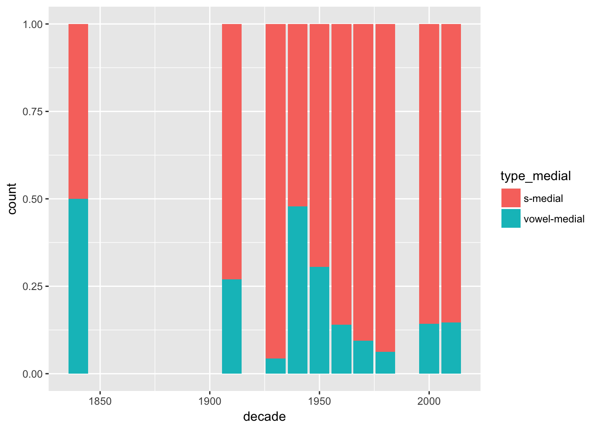
ggplot(verbs %>%
filter(year > 1930)) + # This leaves older data out as it is so gappy
geom_bar(mapping = aes(x = decade, fill = type_medial), position = "fill")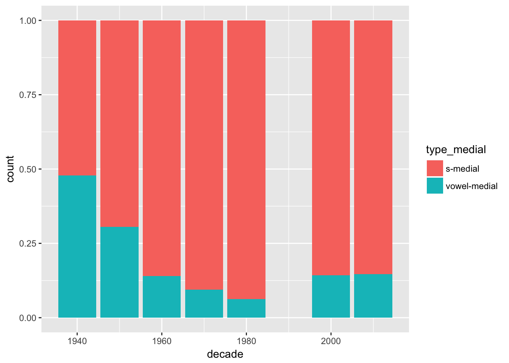
ggplot(verbs %>%
filter(year > 1930) %>%
filter(! is.na(gender))) + # If we want to use a variable later, we have to make sure it is available
geom_bar(mapping = aes(x = decade, fill = type_medial), position = "fill") +
facet_grid(. ~ gender)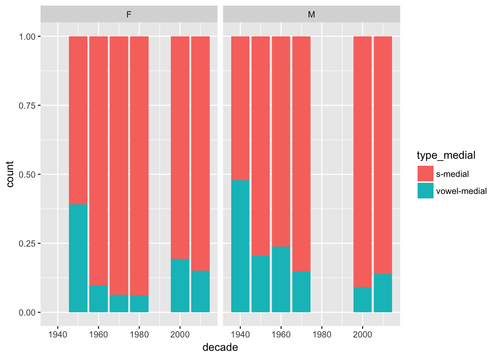
Next thing I want to try is to associate birth places with areas and plot those. For this we need bit more metadata, which I’m now reading from our Filemaker Pro database, but which should be set up better for the actual teaching.
Once we have set up the processing workflow to the point where we have something useful, and maybe get into phase where we don’t know what we are doing, it can be an useful practice to write the dataframe into a new variable so that it is not necessary to do all previous changes when something goes wrong. In this case I create a new variable called verbs_test, and when we accidentally do something we didn’t want to it is easy to run the code from this point onward.
source('/Volumes/langdoc/langs/kpv/FM_meta.R')## Loading required package: DBI## Loading required package: rJava## Joining, by = "Actor_ID"## Joining, by = "Session_ID"## Joining, by = "RecPlace_OSM_ID"## Joining, by = "PlaceofRes_OSM_ID"## Joining, by = "Birthplace_OSM_ID"## Warning in eval(ei, envir): NAs introduced by coercion
## Warning in eval(ei, envir): NAs introduced by coercion
## Warning in eval(ei, envir): NAs introduced by coercion
## Warning in eval(ei, envir): NAs introduced by coercion
## Warning in eval(ei, envir): NAs introduced by coercion
## Warning in eval(ei, envir): NAs introduced by coercion
## Warning in eval(ei, envir): NAs introduced by coercion# meta %>% distinct(place_birth, birthplace_osm_id, lat_birth, lon_birth) %>%
# arrange(place_birth) %>%
# group_by(place_birth) %>%
# filter(n()>1)
verbs_test <- left_join(verbs, meta %>% distinct(participant, lat_birth, lon_birth, attr_foreign) %>% filter(participant %in% verbs$participant)) %>%
rename(lat = lat_birth,
lon = lon_birth)## Joining, by = "participant"verbs_test <- verbs_test %>%
mutate(variety = str_extract(session_name, '(?<=kpv_)[a-z]+'))12.1 From points to polygon
#izva <- st_read('https://raw.githubusercontent.com/langdoc/IKDP-2/025e817c25181b683661a21ab36facb63c830604/data/izva_dialects.geojson')
izva <- st_read('/Users/niko/github/IKDP-2/data/izva_dialects-test.geojson')## Reading layer `OGRGeoJSON' from data source `/Users/niko/github/IKDP-2/data/izva_dialects-test.geojson' using driver `GeoJSON'
## Simple feature collection with 19 features and 4 fields
## geometry type: POLYGON
## dimension: XY
## bbox: xmin: 28.96325 ymin: 55.94814 xmax: 74.33177 ymax: 70.39286
## epsg (SRID): 4326
## proj4string: +proj=longlat +datum=WGS84 +no_defsggplot(izva) +
geom_sf(aes(fill = variant)) +
geom_point(data = verbs_test %>% filter(! is.na(lon)),
aes(x = lon, y = lat))verbs_test %>% filter(is.na(lat)) %>% count(participant) %>% arrange(desc(n))## # A tibble: 31 x 2
## participant n
## <chr> <int>
## 1 IIB-M-1946 58
## 2 TFA-F-1934 46
## 3 APP-F-1957 39
## 4 unknown 25
## 5 AAZ-F-1940 20
## 6 KOM-F-1964 13
## 7 XXC-F-196X 8
## 8 NGK-F-1956 6
## 9 группа 6
## 10 S1 5
## # ... with 21 more rows## based on this:
## https://gis.stackexchange.com/questions/222978/lon-lat-to-simple-features-sfg-and-sfc-in-r
geo_inside <- function(lon, lat, map, variable) {
variable <- enquo(variable)
pt <-
tibble::data_frame(x = lon,
y = lat) %>%
st_as_sf(coords = c("x", "y"), crs = st_crs(map))
pt %>% st_join(map) %>% pull(!!variable)
}
verbs_test <- verbs_test %>%
filter(! is.na(lon) | ! is.na(lat))
verbs_test %>% count()## # A tibble: 1 x 1
## n
## <int>
## 1 3281verbs_test <- verbs_test %>%
mutate(region = geo_inside(lon, lat, izva, variant))## although coordinates are longitude/latitude, it is assumed that they are planarverbs_test <- verbs_test %>%
mutate(dialect = geo_inside(lon, lat, izva, dialect))## although coordinates are longitude/latitude, it is assumed that they are planarggplot(data = verbs_test %>%
filter(str_detect(dialect, 'zva')),
aes(x = type)) +
geom_bar() +
facet_wrap(region ~ gender)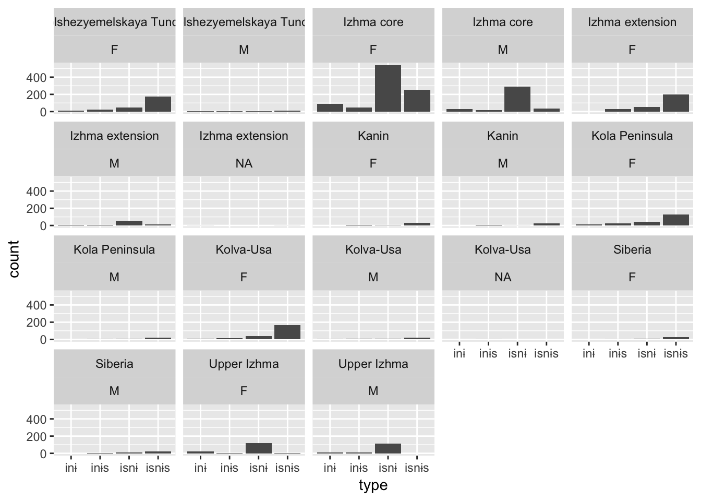
verbs_test %>% count(dialect)## # A tibble: 9 x 2
## dialect n
## <fctr> <int>
## 1 Central Sysola 6
## 2 izva 1311
## 3 Izva 1566
## 4 Lower Vychegda 1
## 5 Luza-Letka 12
## 6 Syktyvdin 7
## 7 Udora 257
## 8 Upper Sysola 30
## 9 Upper Vychegda 91ggplot(verbs_test %>%
filter(! is.na(region)) %>%
filter(str_detect(dialect, 'zva'))) +
geom_bar(mapping = aes(x = region, fill = type), position = "fill") +
theme(axis.text.x = element_text(angle = 90, hjust = 1))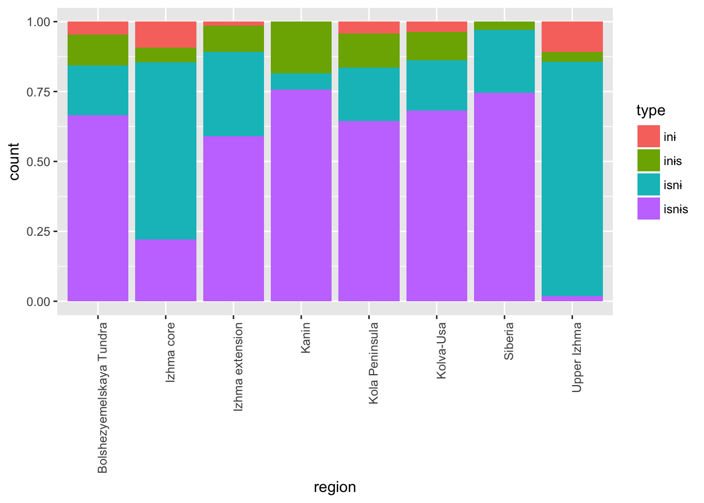
ggplot(verbs_test %>%
filter(! participant %in% c('MSF-F-1968', 'VPC-M-1993')) %>%
filter(! is.na(region)) %>%
filter(str_detect(dialect, 'zva'))) +
geom_bar(mapping = aes(x = region, fill = type), position = "fill") +
theme(axis.text.x = element_text(angle = 90, hjust = 1))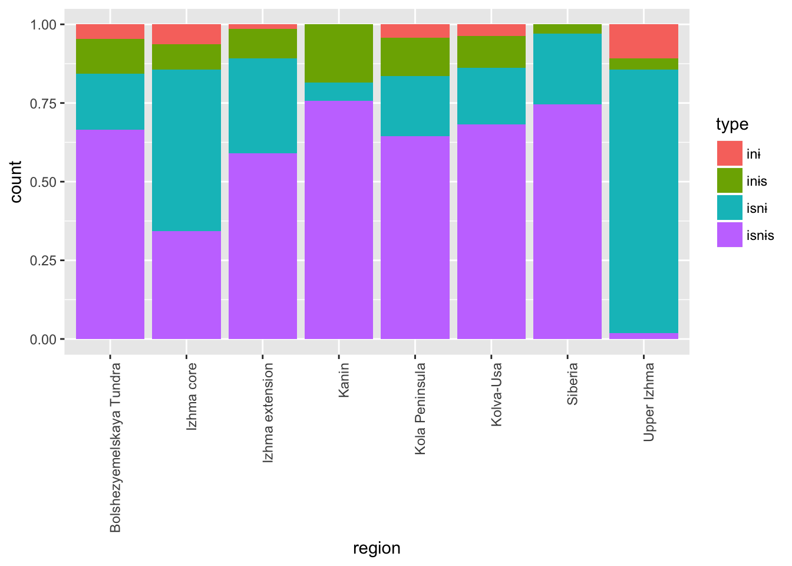
library(geofacet)
mygrid <- data.frame(
code = c("IZKA", "IZKP", "IZBT", "IZCO", "IZSIB", "IZEX", "IZKU", "UDVA", "UDMZ", "VM", "IZUP", "PE", "VYLO", "VYUP", "SK", "SD", "SC", "LL", "SU"),
name = c("Kanin", "Kola Peninsula", "Tundra", "Izhma core", "Siberia", "Izhma extension", "Kolva-Usa", "Vashka", "Mezen", "Vym", "Upper Izhma", "Pechora", "Lower Vychegda", "Upper Vychegda", "Syktyvkar", "Syktyvdin", "Central Sysola", "Luza-Letka", "Upper Sysola"),
row = c(1, 1, 1, 2, 2, 2, 2, 3, 3, 3, 3, 3, 4, 4, 5, 6, 7, 7, 8),
col = c(2, 1, 3, 4, 7, 5, 6, 1, 2, 3, 4, 5, 3, 4, 3, 3, 4, 2, 5),
stringsAsFactors = FALSE
)
geofacet::grid_preview(mygrid)## You provided a user-specified grid. If this is a generally-useful
## grid, please consider submitting it to become a part of the
## geofacet package. You can do this easily by calling:
## grid_submit(__grid_df_name__)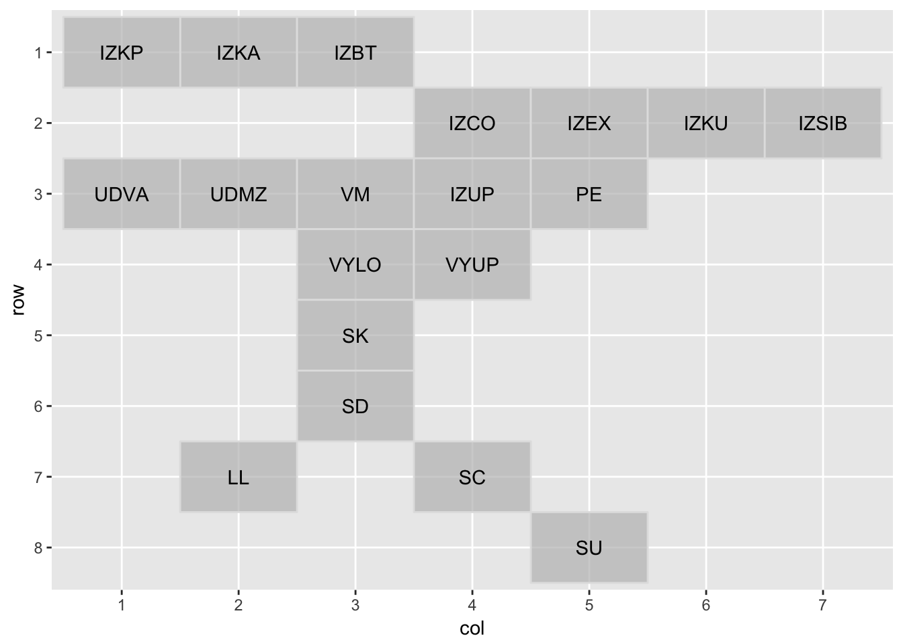
# verbs_test %>% mutate(name = as.character(region)) %>%
# mutate(name = if_else(name == 'Bolshezyemelskaya Tundra', 'Tundra', name)) %>%
# left_join(mygrid) %>%
# filter(! is.na(region)) %>% filter(variety == 'vym') %>% select(name)
ggplot(verbs_test %>%
mutate(name = as.character(region)) %>%
mutate(name = if_else(name == 'Bolshezyemelskaya Tundra', 'Tundra', name)) %>%
left_join(mygrid) %>%
filter(! is.na(region)) %>%
filter(! participant %in% c('MSF-F-1968', 'VPC-M-1993', 'VVF-F-1957'))) +
geom_bar(mapping = aes(x = factor(""), fill = type), position = "fill") +
facet_geo(~ name, grid = mygrid) +
labs(title = "First preterite plural verb allomorphs in Komi-Zyrian dialects",
subtitle = "Map approximates the location and contact relations of the dialects. For blanks no data available.",
caption = "Work done in LATTICE, Paris\nData Source: IKDP Author: Niko Partanen (2017)",
y = "Percentage of different types",
x = "") +
theme_bw() +
theme(axis.line=element_blank(),
axis.text.x=element_blank(),
axis.text.y=element_blank(),
axis.ticks=element_blank(),
# axis.title.x=element_blank(),
# axis.title.y=element_blank(),
# legend.position="none",
panel.background=element_blank(),
# panel.border=element_blank(),
panel.grid.major=element_blank(),
panel.grid.minor=element_blank()) +
theme(strip.background = element_rect(fill="white", linetype = 'blank'))+
theme(strip.text = element_text(colour = 'black', size = 7))## Joining, by = "name"## You provided a user-specified grid. If this is a generally-useful
## grid, please consider submitting it to become a part of the
## geofacet package. You can do this easily by calling:
## grid_submit(__grid_df_name__)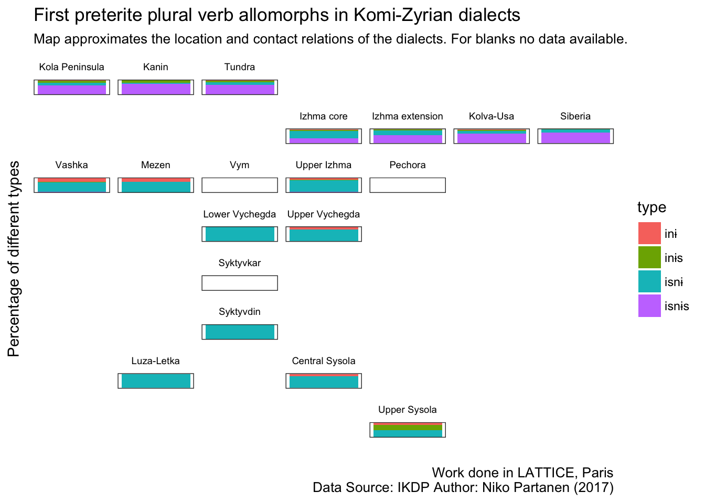
# ggplot(verbs_test %>%
# filter(! participant %in% c('MSF-F-1968', 'VPC-M-1993')) %>%
# filter(! is.na(region)) %>%
# filter(! is.na(gender)) %>%
# filter(str_detect(dialect, 'zva'))) +
# geom_bar(mapping = aes(x = gender, fill = type), position = "fill") +
# theme(axis.text.x = element_text(angle = 90, hjust = 1))
#
ggplot(verbs_test %>%
filter(! is.na(region)) %>%
filter(! str_detect(dialect, 'zva'))) +
geom_bar(mapping = aes(x = region, fill = type), position = "fill") +
theme(axis.text.x = element_text(angle = 90, hjust = 1))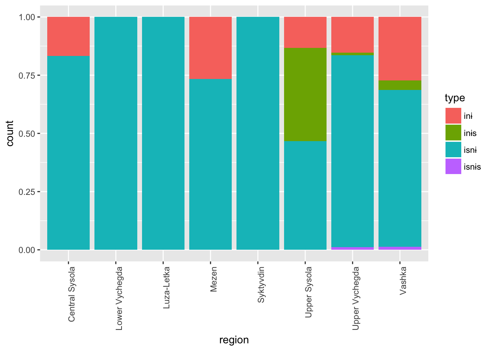
# verbs_test %>% filter(type == 'inɨ')
verb_stems <- verbs_test %>%
mutate(stem = str_extract(token, '.+(?=(и|і)с?ны?с?)')) %>%
distinct(stem) %>%
arrange(stem)
# verb_stems %>%
# filter(! str_detect(stem, "(j|['])")) %>%
# write_csv('data/izva_verbs.csv')
# verbs_test %>%
# mutate(stem = str_extract(token, '.+(?=(и|і)с?ны?с?)')) %>%
# count(stem) %>%
# arrange(desc(n)) %>%
# slice(10:20)
# verbs_test %>%
# filter(variety == 'izva') %>%
# mutate(stem = str_extract(token, '.+(?=(и|і)с?ны?с?)')) %>%
# filter(! stem == 'в') %>%
# count(stem, type) %>%
# rename(hits = n) %>%
# arrange(stem) %>%
# split(.$stem) %>%
# map(~ mutate(.x, diff_types = n()) %>%
# mutate(type_ratio = hits / sum(hits)) %>%
# mutate(sum_hits = sum(hits))) %>%
# bind_rows %>%
# filter(sum_hits > 10) %>%
# arrange(desc(diff_types)) %>% View
# verbs_test %>%
# filter(variety == 'izva') %>%
# mutate(stem = str_extract(token, '.+(?=(и|і)с?ны?с?)')) %>%
# filter(stem == 'босьт') %>%
# filter(type == 'isnɨs') %>%
# select(utterance) %>%
# View
# verbs_test %>% filter(str_detect(utterance, 'всю')) %>% select(utterance, filename) %>% open_eaf(3)
# kpv %>% filter(str_detect(utterance, 'кеде ')) %>% distinct(utterance, participant, filename)
#
# split(.$type) %>%
# map(~ count(.x, stem) %>%
# arrange(desc(n)) %>%
# slice(10:20))
# verbs_test %>% filter(str_detect(token, '^кор')) %>% select(utterance, participant, variety, year)
# verbs_test %>% filter(str_detect(token, '^торйед')) %>% open_eaf(1)
verbs_test %>%
mutate(stem = str_extract(token, '.+(?=(и|і)с?ны?с?)')) %>%
left_join(read_csv('data/izva_verbs.csv')) %>%
filter(! is.na(category)) %>%
filter(stem != 'вӧл') %>%
# select(token, type, type_medial, gender, year, participant, category, variety, region, dialect) %>%
ggplot(data = .,
aes(x = category)) +
geom_bar() +
facet_grid(. ~ type)## Parsed with column specification:
## cols(
## stem = col_character(),
## category = col_character(),
## remove = col_character()
## )## Joining, by = "stem"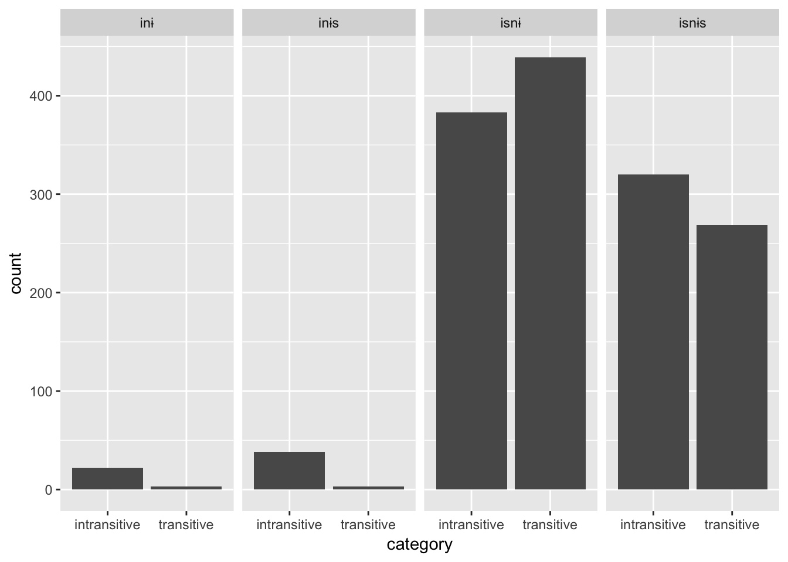
verbs_test %>%
mutate(stem = str_extract(token, '.+(?=(и|і)с?ны?с?)')) %>%
left_join(read_csv('data/izva_verbs.csv')) %>%
filter(! is.na(category)) %>%
filter(dialect %in% c('Udora', 'izva', 'Izva')) %>%
filter(stem != 'вӧл') %>%
select(token, type, gender, year, participant, category, variety, region, dialect) %>%
ggplot(data = .,
aes(x = category)) +
geom_bar() +
facet_grid(type ~ variety)## Parsed with column specification:
## cols(
## stem = col_character(),
## category = col_character(),
## remove = col_character()
## )
## Joining, by = "stem"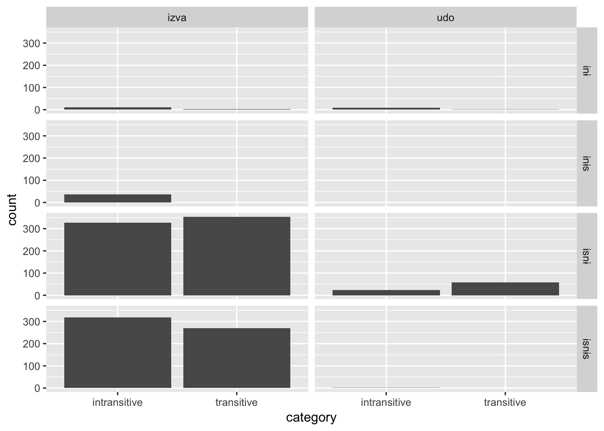
int <- verbs_test %>%
mutate(stem = str_extract(token, '.+(?=(и|і)с?ны?с?)')) %>%
left_join(read_csv('data/izva_verbs.csv')) %>%
filter(! is.na(category))## Parsed with column specification:
## cols(
## stem = col_character(),
## category = col_character(),
## remove = col_character()
## )
## Joining, by = "stem"# int %>%
# left_join(count(int, stem) %>% rename(token_count = n)) %>%
# arrange(desc(token_count)) %>%
# distinct(stem, token_count) %>%
# ggplot(data = .,
# aes(x = token, y = token_count)) +
# geom_bar()
# блиныс# verbs %>% arrange(token) %>% distinct(token) %>% write_csv('data/izva_verbs.csv')
# verbs %>% filter(str_detect(token, 'j'))
# verbs %>% mutate(variant = str_extract(session_name, '(?<=kpv_)[a-z]+(?=\\d)')) %>% count(variant)
#verbs %>% left_join()